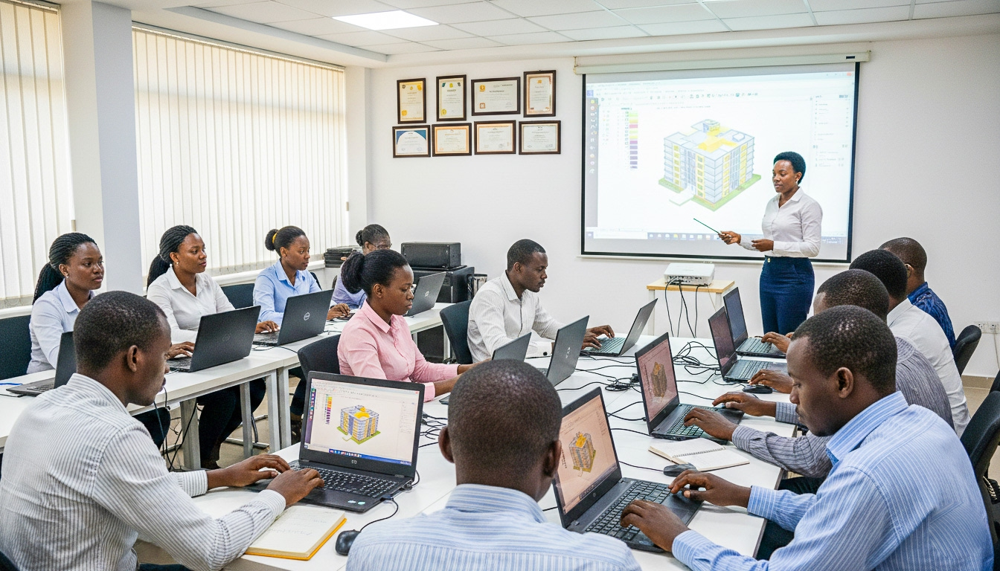

01
Engineering & Construction
Civil, structural, mechanical and electrical engineering; construction coordination; building services; and technical support for infrastructure delivery.
Search this page or continue to Insights for more information.
We collaborate with capable business developers, project-based professionals, and technical associates to support integrated engineering and intelligent project-delivery solutions.
At Jiro-BEACONS Engineering, we see engineering as a connected process: understanding existing conditions, planning and coordinating delivery, verifying quality, and organizing reliable information for the life of an asset.
That approach creates opportunities for people with different technical backgrounds to contribute to a shared objective. From site-based engineering and surveying to quality assurance, project controls and digital information management, every discipline can strengthen the outcome.
We value professional integrity, practical problem-solving, clear communication and a willingness to keep learning.
Learn about our approachGood engineering depends on more than individual technical ability. It requires people who can collaborate across disciplines, communicate evidence clearly and take responsibility for the quality of their work.
Review our active recruitment for commercial partners or express interest in joining our professional associate network.
Engineering | Construction | Integrated AEC Professional Teams | Digital Engineering
Jiro-BEACONS Engineering Nigeria Limited is developing an integrated engineering and intelligent project-delivery business that connects professional expertise, construction quality, engineering information and digital asset solutions.
Our approach combines conventional engineering and project support with structured digital information to help clients improve project coordination, quality assurance, documentation, handover and asset visibility. We also develop coordinated professional-team solutions, connecting clients with suitable AEC specialists according to project requirements, professional competence and applicable regulatory requirements.
We are seeking a commercially resourceful Business Development Partner to help translate these capabilities into client relationships, qualified opportunities, strategic partnerships and sustainable revenue. This opportunity is intended for an experienced B2B business development professional who understands consultative selling, can engage business decision-makers and is motivated by building commercial opportunities.
You will work directly with the Director to identify prospective clients, understand their requirements, develop a qualified sales pipeline, coordinate proposals and progress suitable opportunities towards contract award. The role is broader than social media promotion or lead-list preparation. We are looking for someone who can take ownership of the business development process and contribute measurable commercial value.
This is an initial commission-based independent business development partnership, not a salaried employment position. There is no guaranteed base salary at the initial stage. Commission rates and payment terms will be discussed and agreed in writing before the engagement begins. The written agreement will define eligible transactions, commission calculation, timing, repeat business, and confidentiality terms.
Please submit your CV/LinkedIn profile, summary of experience, target markets, examples of past commercial results, and a 90-day strategy outline.
We invite qualified architects, planners, surveyors, civil and structural engineers, quantity surveyors, builders, QA/QC specialists, and other relevant professionals to express interest in future project assignments and professional team collaborations.
Register for AEC NetworkBuild collaborative relationships with professionals experienced in Scan-to-BIM, asset information modeling, engineering documentation, quality management systems, and specialized digital engineering workflows.
Register as Digital AssociateOur work brings together several technical and professional disciplines. Explore the areas relevant to your experience and consider expressing interest in future opportunities.
Civil, structural, mechanical and electrical engineering; construction coordination; building services; and technical support for infrastructure delivery.
Land and engineering surveying, setting-out, as-built surveys, geospatial data, reality capture and spatial information management.
Quality assurance, quality control, inspection, materials testing, non-destructive testing, test records and construction quality evidence.
Planning, scheduling, quantity measurement, cost estimation, BOQ development, progress monitoring and commercial support.
BIM coordination, Scan-to-BIM, digital as-builts, asset registers, structured engineering data and digital twin information workflows.
Document control, EDMS administration, technical records, digital handover, information management, reporting and workflow improvement.
Architectural support, planning, multidisciplinary design coordination, drawing management and integration of technical information across project stages.
Engineering data organization, automation, software development, data analysis and responsible application of technology to project and asset information.
Project administration, research, communications, business development, operations support and coordination across multidisciplinary teams.
Important: These are areas of professional interest, not a list of confirmed vacancies. Any engagement depends on actual project requirements, role availability, qualifications and the agreed working arrangement.

Our integrated approach connects people and information across surveying, planning, construction, quality assurance and digital delivery. Depending on the project, collaboration may involve site-based, office-based or remote contributions where the scope and working arrangement support them.
Connect With Our TeamWe aim to make initial contact straightforward and focused on relevant professional information.
Share your CV or professional profile, discipline, relevant experience, qualifications and the type of work you can contribute to.
Highlight relevant project experience, software proficiency, professional certifications and examples of the problems you can help solve.
If your experience aligns with a suitable requirement, your profile may be considered for follow-up. An expression of interest is not a job offer or guarantee of selection.
Send us your professional profile and tell us where you can contribute. Please include your discipline, years of experience, location and preferred working arrangement.